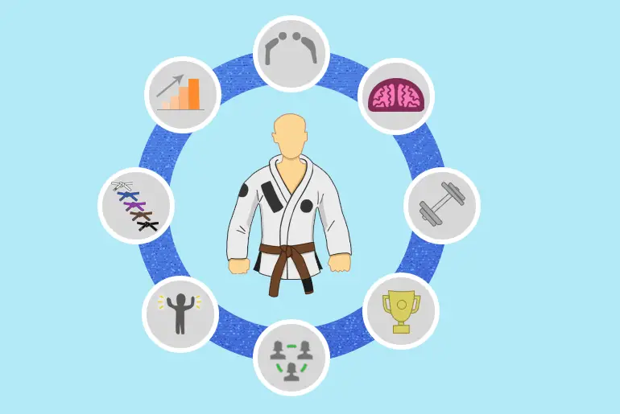

About Brazilian Jiu-Jitsu
BJJ revolves around the concept that a smaller, weaker person can successfully defend themselves against a bigger, stronger, heavier opponent by using leverage and weight distribution, taking the fight to the ground, and using a number of holds and submissions to defeat them. BJJ training can be used for sport grappling and self-defense situations. Sparring, commonly referred to as "rolling" within the BJJ community, and live drilling play a major role in training and the practitioner's development. BJJ can also be used as a method of promoting physical fitness, building character, and as a way of life.
History of Brazilian Jiu-Jitsu
Brazilian Jiu-Jitsu (BJJ) was developed in the early 20th century by the Gracie family in Brazil. It was adapted from Kodokan Judo, which was brought to Brazil by Mitsuyo Maeda. The Gracies refined the techniques, focusing on ground fighting and submissions. BJJ gained international recognition through mixed martial arts competitions, where practitioners showcased its effectiveness.

Common Techniques in BJJ
- Guard: A position where a practitioner uses their legs to control an opponent.
- Mount: A dominant position where a practitioner sits on top of their opponent.
- Chokes: Techniques aimed at cutting off the opponent's blood supply or airflow.
- Joint Locks: Techniques that manipulate the opponent's joints to cause pain or submit.
- Sweeps: Techniques used to reverse positions from the bottom to the top.
Benefits of Practicing BJJ
Practicing Brazilian Jiu-Jitsu offers numerous benefits, including improved physical fitness, enhanced problem-solving skills, increased confidence, stress relief, and a supportive community. BJJ is known for its rigorous training, which builds endurance, strength, and flexibility. It also promotes mental resilience and strategic thinking.
